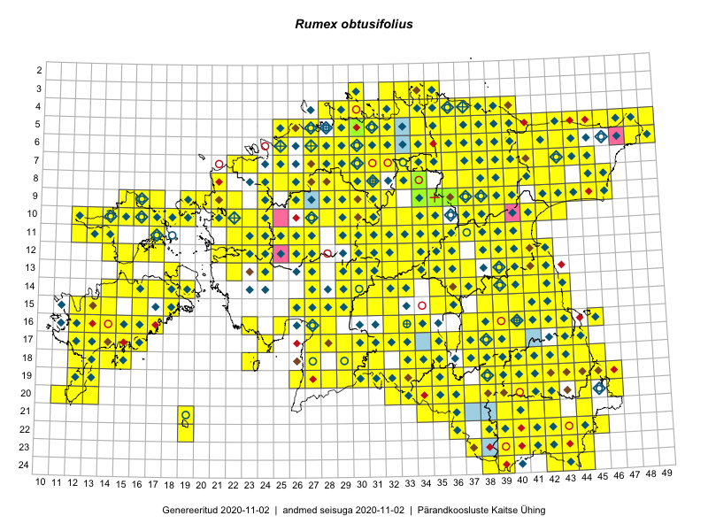

Rumex obtusifolius
Uuendatud: 2016-12-01
Kaardile koondatud taksonid: Rumex obtusifolius L.; Rumex obtusifolius subsp. obtusifolius L.

Kaart põhineb 538 kirjel, neist vaatlusi 536 ja eksemplare 2.
Kuvatud viited 20 esimesele andmebaasikirjele, ülejäänud PlutoFis
- Malle Leht: 2015-05-16: : ala
- Peedu Saar: 2015-05-09: 13-30: ala
- Peedu Saar, Timo Luhamäe: 2015-05-10: 12-30: ala
- Peedu Saar, Timo Luhamäe: 2015-05-10: 12-32: ala
- Peedu Saar, Timo Luhamäe: 2015-05-13: 06-39: ala
- Peedu Saar, Timo Luhamäe: 2015-05-13: 06-40: ala
- Peedu Saar: 2015-05-14: 09-43: ala
- Peedu Saar: 2015-05-14: 10-43: ala
- Toomas Kukk, Thea Kull, Timo Luhamäe, Ott Luuk, Peedu Saar: 2015-06-29: 14-17: ala
- Peedu Saar, Liina Oja: 2015-05-22: 19-30: ala
- Peedu Saar, Liina Oja: 2015-05-22: 19-29: ala
- Thea Kull: 2015-07-07: 16-40: ala
- Rein Kalamees: 2015-06-08: 05-32: ala
- Rein Kalamees: 2015-06-05: 05-32: ala
- Peedu Saar, Liina Oja: 2015-05-15: 16-23: ala
- Peedu Saar, Toomas Kukk: 2015-05-28: 11-17: ala
- Peedu Saar, Toomas Kukk: 2015-05-28: 10-15: ala
- Peedu Saar, Toomas Kukk: 2015-05-27: 09-15: ala
- Peedu Saar, Toomas Kukk: 2015-05-27: 09-16: ala
- Toomas Kukk, Eerik Leibak: 2015-08-09: 14-15: ala